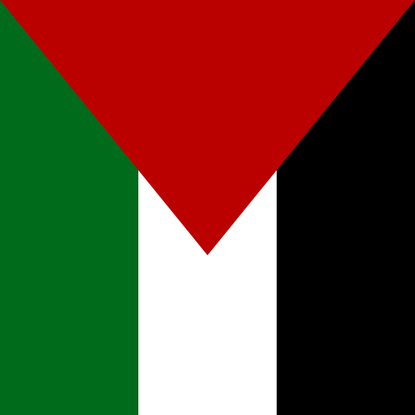

{% if event.flyer %}
 {% else %}
{% if event.location %}
{% endif %}
{% if event.date %}
{% endif %}
{% else %}
{% if event.location %}
{% endif %}
{% if event.date %}
{% endif %}
{% endfor %}
{% else %}

{% endif %}{{ event.title }}
Where:
{{ event.location }}When:
{{ event.date | date: "%A, %b %d %Y"}} {{ event.time }}{{ event.content }}